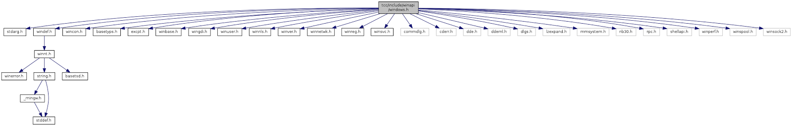

待研究項目
C 語言
- C/C++ 跨平台執行其它程式
- C/C++ extern、inline、可變參數函數
- C11 中諸如 _Generic、multithread 等新功能
C11: A New C Standard Aiming at Safer Programming - 在 C 中實現物件導向
你所不知道的 C 語言：物件導向程式設計篇 – HackMD
Object-Oriented Programming With ANSI-C
機械原理
- 齒輪、電動機：轉矩、轉速、功率間的關係
- 汽車引擎原理、變速箱、扭力、馬力、速率、加速度
- 油門踏版控制的是什麼？
- 為什麼踩了油門(固定大小的情況下)不會一直加速，而是會停在某一個固定的速率？
GUI 程式設計 Library 整理
把 gtk、qt 庫拿來拆開看是不是最終引用到 X11/Xlib.h
把 opengl 拆開看看 Linux 下是不是引用 X11/Xlib.h，Windows 下是不是引用 windows.h (還是其它什麼東西)，順便看看 windows.h 的 reference 關係(看是要另寫一篇還是怎樣)
畫出這些 Library 還有裡面的 Function 間的 reference 關係
像這樣

ncurses Library 原理解析
- curses、pcurses、ncurses 間的關係
- ncurses 實現原理
Linux ncurses 实现原理 – SegmentFault
Vim C語言 IDE
主功能列表：
- 顯示所有 Function、Variable、Macro…的列表
- 顯示樹狀檔案瀏覽器圖
- Vim 內嵌的 Shell 視窗，可以直接在裡面執行命令，而且要可以按下快捷鍵把特定命令(如：編譯、除錯…)傳送到該視窗中，要可以在編輯區和該視窗來回切換
- 在巢狀結構中可以標示出各層縮排
- 其它比如代碼補全等常有的功能
- 功能3中的除錯使用 DDD(Data Display Debugger)
Gentoo 試用
Linux Shell Pipe, Redirection, and xargs
linux shell 管道命令(pipe)使用及与shell重定向区别 – 程默 – 博客园 将Linux命令的结果作为下一个命令的参数 – Honghe的个人空间
同步vs異步、阻塞vs非阻塞
https://medium.com/@hyWang/%E9%9D%9E%E5%90%8C%E6%AD%A5-asynchronous-%E8%88%87%E5%90%8C%E6%AD%A5-synchronous-%E7%9A%84%E5%B7%AE%E7%95%B0-c7f99b9a298a http://blog.jobbole.com/103290/
System V, upstart, and systemd
getty, login
init getty login shell – elijah5748的专栏 – 博客频道 – CSDN.NET 进程关系 – 暗无天日
rc
linux – What does the “rc” stand for in /etc/rc.d? – Unix & Linux Stack Exchange bash – What does “rc” in .bashrc stand for? – Unix & Linux Stack Exchange
System Call 與 Interrupt 原理
- 編譯：從 printf() (C Standard Library, libc) 拆到 write() (Linux System Call Wrapper, The GNU C Library, glibc) 再到組合語言 (int 0x80)
- 開機到kernel載入初始化
- 正式執行時的呼叫，以及電路機制(包含硬體中斷和軟體中斷)
- int 16h vs int 0x80
deprecated System Call 原理解析 (以 printf() 到 write() 再到組合語言為例)
kernel – How is an Interrupt handled in Linux? – Unix & Linux Stack Exchange
Linux 内核–硬件中断初始化及中断描述符表 – suoyihen – ITeye技术网站
转载_linux内核分析（某位大牛的文章） – williamwanglei的专栏 – 博客频道 – CSDN.NET
IDT系列：（一）初探IDT，Interrupt Descriptor Table，中断描述符表 – fwqcuc的专栏 – 博客频道 – CSDN.NET
linux中断源码分析 – 概述(一) – tolimit – 博客园
linux中断源码分析 – 初始化(二) – tolimit – 博客园
linux中断源码分析 – 中断发生(三) – tolimit – 博客园
linux中断源码分析 – 软中断(四) – tolimit – 博客园
Linux 系统调用内核源码分析 | woshijpf’s blog
oss.csie.fju.edu.tw/note/C/syscall.txt
什麼是 “asmlinkage”？
getch() and getche() in linux
getch linux – Google 搜尋
gcc – How to implement getch() function of C in Linux? – Stack Overflow
c – What is Equivalent to getch() & getche() in Linux? – Stack Overflow
linux tty, pts, ptmx
- /dev/tty, /dev/pts/, /dev/pts/ptmx, /dev/ptmx 分別是什麼
- who 指令每一個欄位的意義
sudo dpkg –configure -a
在 apt-get 指令被意外中斷時，可以用這個指令繼續設定作業。
查出該指令的詳細意義，並寫一篇文章。
試用 emacs
GNU readline
shutdown halt poweroff
https://www.google.com/search?q=shutdown+halt+poweroff&oq=shutd&aqs=chrome.1.69i57j69i59j69i65j69i60l2.1970j0j9&sourceid=chrome&ie=UTF-8 https://blog.gtwang.org/linux/how-to-shutdown-linux/
acpi apm
https://www.google.com/search?q=acpi+apm&oq=acpi+apm&aqs=chrome.0.69i59j69i65.2353j0j9&sourceid=chrome&ie=UTF-8 http://www.differencebetween.net/technology/software-technology/difference-between-apm-and-acpi/
Magic SysRq Key
https://www.google.com/search?q=SysRq&oq=Sys&aqs=chrome.0.69i59j69i57j69i65j69i60j69i65j69i60.2397j0j9&sourceid=chrome&ie=UTF-8 https://blog.gtwang.org/linux/safe-reboot-of-linux-using-magic-sysrq-key/ https://www.cool3c.com/article/5640 https://www.wikiwand.com/en/System_request https://www.wikiwand.com/en/Keyboard_buffer https://www.wikiwand.com/en/Magic_SysRq_key
Linux 任務管理
vimdiff
clang/llvm
ddd tutorial
%systemroot%\system32\oobe\msoobe.exe /a 可以確認 Win XP 是否啟動
手機各 Generation (1G, 2G, 3G…) 對應的技術列表，要包含手機上面的圖示顯示 (G, E, H, H+, 4G…)，還有各自的速度等。
update-alternatives
notify-send
https://ubuntuforums.org/showthread.php?t=1859585
hwclock & date
http://www.prudentman.idv.tw/2014/12/rtc-hwclock-date.html